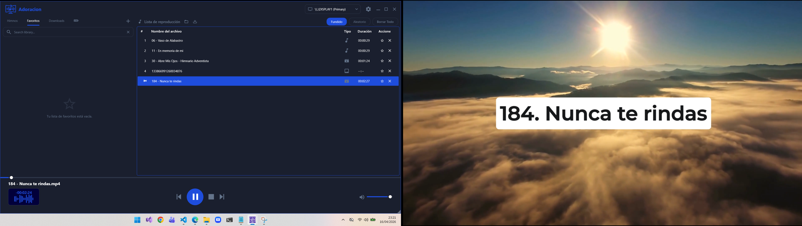

An open-source multimedia player built for seamless presentations, high-performance video, and native image rendering.

Dedicated output for projectors while maintaining full control on your main display.
Built-in crossfading and smooth visual transitions powered by LibVLCSharp.
Quick access to hymns, favorites, and removable USB drives.
High-efficiency display to minimize memory usage during long services.